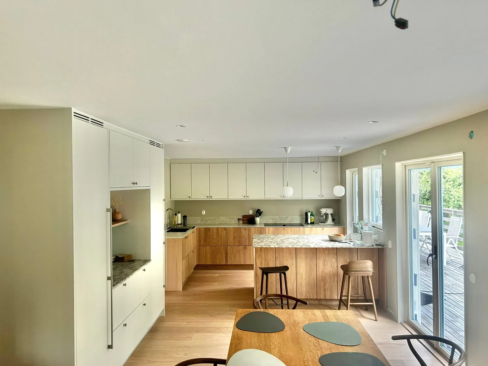
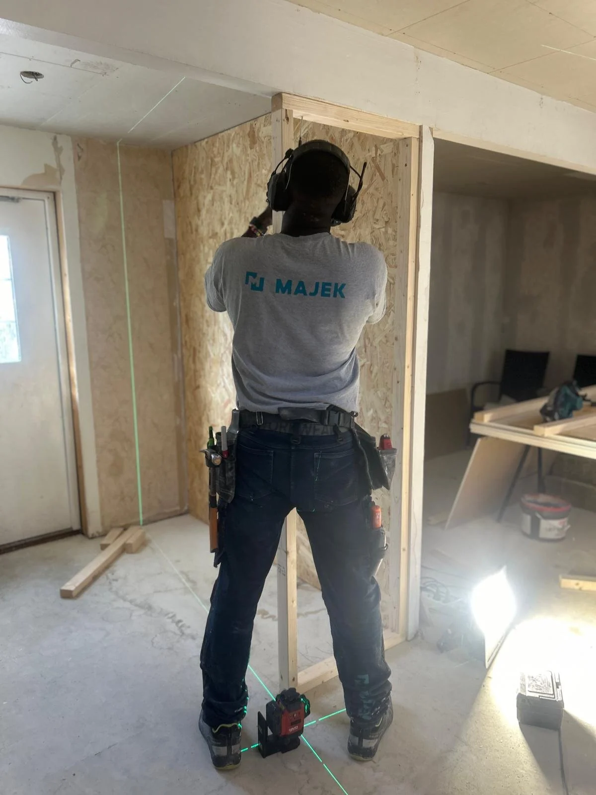

Se arbetet

MAJEK BYGG & ENTREPRENAD · GÖTEBORGSREGIONEN
Mer plats
för ditt liv.
Vi bygger om, bygger till och tar hand om detaljerna.
Från det första samtalet till det färdiga arbetet.
BYGGFÖRETAG I KUNGÄLV & GÖTEBORG
Du har en idé.
Vi hjälper dig
att bygga den.
Ett hem förändras med livet. Ett kök behöver förnyas, familjen behöver mer plats eller altanen har gjort sitt.
Majek hjälper privatpersoner, fastighetsägare och byggföretag med stora och små byggarbeten i Göteborgsregionen. Du får ett förslag för just ditt projekt och en tydlig bild av arbetet innan vi sätter igång.
Lär känna MajekVÅRA EGNA ARBETEN
Hantverket
syns i resultatet.

DET HÄR HJÄLPER VI DIG MED
Från en ny dörr.
Till en ny del av huset.
Renovering, snickeri och entreprenad.
En kontakt för nästa steg.
Entreprenad
När projektet växer. Nybyggnad, tillbyggnad och renovering med en tydlig plan från start.
Läs merByggservice
För det som behöver lagas, bytas eller bli färdigt. Snickeri och underhåll för hem och fastigheter.
Läs merUnderentreprenad
En byggpartner för andra byggföretag. Vi hjälper till med snickeri, service och entreprenadarbeten.
Läs mer
ORDNING I ARBETET. NÄRA KONTAKT.
Det ska kännas
tryggt att bygga.
Vi går igenom vad du vill göra, dokumenterar det vi kommer överens om och håller dig uppdaterad under arbetet.
- Tydlig överenskommelse och kostnadsbild
- Byggbeskrivningar enligt AMA:s principer
- Direktkontakt med människorna bakom arbetet
ORD FRÅN VÅRA KUNDER
Så säger de
som anlitat oss.
Är jättenöjd med min altanrenovering och att jag anlitade Majek Bygg. Toppenjobb!
Vi är mycket nöjda med arbetet på vår förrådsvägg!
Riktigt nöjd med Benjamin!
Utdrag ur Google-omdömen som visas på Majeks befintliga webbplats. Se Majek på Google.
VI BÖRJAR MED ETT SAMTAL
Vad vill du
bygga om?
Ett nytt kök, en större altan eller ett helt byggprojekt.
Berätta vad du har i tankarna.